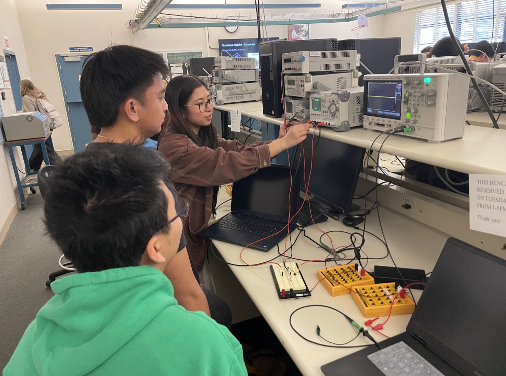

Kickstarter Workshop /
Spring 2026If you want to get started with electrical engineering, the best place to begin is in the lab. In this Kickstarter Workshop, you’ll learn how to use essential benchtop equipment and computer software while reviewing core circuit fundamentals. We’ll cover resistor topology, basic filters, and how to properly build and test simple circuits. Designed for freshmen and transfer students with limited lab experience, this workshop helps you build confidence through hands-on practice.
